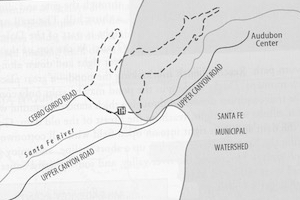
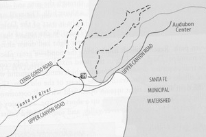

Hike New Mexico
w/ Tom & Ken
Nature Conservancy Trail
| Difficulty | Round-trip | Type | Elev. Chg. | Exposure | Wow Factor | Facilities | Seasons | Flickr | By Car |
|---|---|---|---|---|---|---|---|---|---|
| Easy | 1.5 miles | Loop | 300 ft | Full sun | Local views | Nature Center | All | Album |  |


 

- Aug 23, 2014: A beautiful trail ahead
- Aug 23, 2014: In the early days, Santa Fe water supply
- Aug 23, 2014: At the nature center, beautiful flowers abound
- Aug 23, 2014: View of the Southern Sangre de Cristo foothills
- https://www.flickr.com/photos/139088815@N08/27905291362/in/album-72157667668829694
- https://www.flickr.com/photos/139088815@N08/27905283332/in/album-72157667668829694
- https://www.flickr.com/photos/139088815@N08/28007544395/in/album-72157667668829694
- https://www.flickr.com/photos/139088815@N08/27393660873/in/album-72157667668829694
The Nature Conservancy Trail is on the outskirts of Santa Fe and lies in the former water conservation district of the city. The trail is easy, though exposed to sun, and passes by the Audubon Center - a worthwhile side trip. There are informational plaques to help provide a historical context for the walk. The trail abuts the Dale Ball Trail System - South (see book reference #2 below).